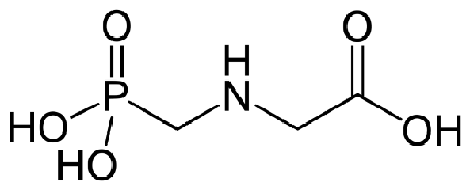
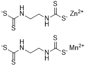
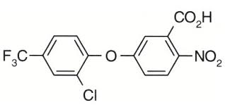
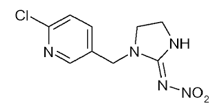

Tabela
Agrotóxicos
| Nome | Estrutura química | Funções orgânicas presentes | Tipo | Classificação Toxicológica | Aplicações / Curiosidades |
|---|---|---|---|---|---|
| Glifosato |  |
|
Herbicidas | IV - Pouco tóxico | Cultivo de grãos, algodão, cana de açúcar, cereais, frutas, pastagens, fumos, eucaliptos e seringueiras. Pode controlar mais de 150 espécies de plantas daninhas e é o agrotóxico mais utilizado no Brasil, UE e nos EUA. |
| Nome | Estrutura química | Funções orgânicas presentes | Tipo | Classificação Toxicológica | Aplicações / Curiosidades |
|---|---|---|---|---|---|
| 2,4-D |
|
Herbicidas | I - Extremamente tóxico | Cultura de soja, milho, cana-de-açúcar, café, trigo, aveia, centeio e pastagem formada. Na cultura de soja é utilizado para matar as ervas daninhas. |
| Nome | Estrutura química | Funções orgânicas presentes | Tipo | Classificação Toxicológica | Aplicações / Curiosidades |
|---|---|---|---|---|---|
| Mancozebe |  |
|
Fungicidas e acaricida | III - Moderadamente tóxico | Controla doenças em hortaliças e frutas e controla o ácaro na "ferrugem" do citrus. É utilizado nas culturas de abacate, abóbora, arroz, banana, beringela, café, cebola, cevada, etc. |
| Nome | Estrutura química | Funções orgânicas presentes | Tipo | Classificação Toxicológica | Aplicações / Curiosidades |
|---|---|---|---|---|---|
| Acefato |  |
|
Inseticidas | IV - Pouco Tóxico | Utilizados nas culturas de algodão, feijão, soja e tomate industrial. |
| Nome | Estrutura química | Funções orgânicas presentes | Tipo | Classificação Toxicológica | Aplicações / Curiosidades |
|---|---|---|---|---|---|
| Imidacloprido |  |
|
Inseticidas | II - Altamente tóxico | É um produto que possui forma de ação sistêmica e é utilizado nas culturas de algodão, arroz, arroz irrigado, batata, cana-de-açúcar, citros, feijão, fumo, milho, soja, tomate e trigo. |